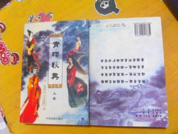

以下都是我曾經非常珍愛的書，今由於志趣更易，這些書存在的意義已不大，故將其贈予友人。
希望拿到書的朋友，也像我當年一樣愛惜它。並且有個條件，一定不能以廢紙的價格轉賣。
如果有人希望我題字贈言的話，請想好一句簡短的格言警句發給我。

書名：《看見》
作者：柴靜
頁數：四〇五頁
我看了《穹頂之下》後才認識了柴靜，衝動之下我買到了此書，很便宜，卻是在我的書箱中難得的精品。
作爲一綫記者的柴靜，身上裝載著不一般的使命。當熱度退去，是否還有人記得事件中，非同尋常的意義。真假華南虎牽動了誰？「要加薪」一定得死嗎？

書名：《青樓秘典》
作者：葉一青 楊林山 王光照
頁數：（二冊）一一九一頁

e201302012123@gmail.com
ejsoon@126.com
(+86) 15158888354
ejsoon@126.com
(+86) 15158888354